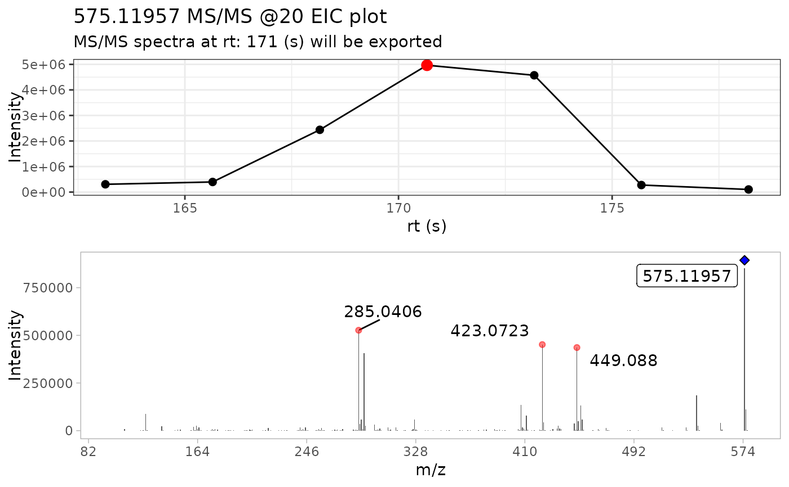

Internal function
Arguments
- spec
a data frame containing the extracted MS2 spectra, the following colums are required:
- mz_precursor
precursor ion
- rt
retention time
- mz
m/z values
- intensity
intensity values
- spec_metadata
a data frame containing the values to be including in the resulting mgf file. In this case, this is the minimum mandatory information to be included.
The full explanation about fields and field content can be found in GNPS batch library upload link.
For the rest of fields that are included in the final library file, MS2extract will get this information for the extracted spectra.
We highly suggest to check the
gnps_template.xlsxfile described in the function example to check what fields/columns are required in MS2extract.- COMPOUND_NAME
character, Metabolite name, it has to be the same name used in
met_metadata, the data frame used to import your MS/MS data- INSTRUMENT
character, instrument used for data collection
- COLLISIONENERGY
character, collision energy used in MS/MS fragmentation
- IONSOURCE
Ionization source
- SMILES
character, SMILES chemical structure of your metabolite
- INCHI
character, Inchi value for the metabolite
- INCHIAUX
character, INCHIAUX for the metabolite
- IONMODE
character, ionization polarity
- PUBMED
character, PUBMED id where you submitted the MS/MS spectra
- ACQUISITION
character, Crude, Lysate, Commercial, Isolated, Other
- DATACOLLECTOR
character, Person who collected the MS/MS data
- INTEREST
character, interest of the MS/MS data
- LIBQUALITY
character, library quality. 1 for Gold, 2 for Silver, 3 for Bronze
- GENUS
character, genus of the organism
- SPECIES
character, species of the organism
- STRAIN
character, strain of the organism
- CASNUMBER
character, CAS number of the metabolite
- PI
character, principal investigator
- mgf_name
file name for the exported mgf library. It does not have to contain the file extension
.mgf.
Details
This function facilitates to create the structure of the GNPS .mgf format. For more information about submitting your spectra to GNPS, please visit this link.
You can find the GNPS template spreadsheet in this link.
Examples
# Example with batch spectra ----
# Select the csv file name and path
batch_file <- system.file("extdata", "batch_read.csv",
package = "MS2extract"
)
# Read the data frame
batch_data <- read.csv(batch_file)
# File paths for Procyanidin A2 and Rutin
ProcA2_file <- system.file("extdata",
"ProcyanidinA2_neg_20eV.mzXML",
package = "MS2extract"
)
Rutin_file <- system.file("extdata",
"Rutin_neg_20eV.mzXML",
package = "MS2extract"
)
# Add file path - User should specified the file path -
batch_data$File <- c(ProcA2_file, Rutin_file)
# Checking batch_data data frame
batch_data
#> Name Formula Ionization_mode min_rt max_rt
#> 1 Procyanidin A2 C30H24O12 Negative 163 180
#> 2 Rutin C27H30O16 Negative 162 171
#> File
#> 1 /home/runner/work/_temp/Library/MS2extract/extdata/ProcyanidinA2_neg_20eV.mzXML
#> 2 /home/runner/work/_temp/Library/MS2extract/extdata/Rutin_neg_20eV.mzXML
# Using batch import to import multiple compounds
batch_compounds <- batch_import_mzxml(batch_data)
#> Reading MS2 data from
#> Processing... ProcyanidinA2_neg_20eV.mzXML
#> 1 different collsion energies were found: 20
#> Reading MS2 data from
#> Processing... Rutin_neg_20eV.mzXML
#> 1 different collsion energies were found: 20
# Checking dimension by compound
# Procyanidin A2: 24249 ions
# Rutin: 22096 ions
purrr::map(batch_compounds, dim)
#> $`Procyanidin A2`
#> [1] 24249 6
#>
#> $Rutin
#> [1] 22096 6
#>
batch_extracted_compounds <- batch_extract_MS2(batch_compounds)
#> Warning: `position_stack()` requires non-overlapping x intervals
#> Warning: `position_stack()` requires non-overlapping x intervals

 # Batch detect mass
batch_mass_detected <- batch_detect_mass(batch_extracted_compounds,
normalize = TRUE, # Normalize
min_int = 1
) # Minimum intensity
# Reading metadata from GNPS template
template_file <- system.file("extdata", "GNPS_template.xlsx",
package = "MS2extract")
gnps_template <- readxl::read_excel(path = template_file,
sheet = "batch_example")
# Batch detect mass
batch_mass_detected <- batch_detect_mass(batch_extracted_compounds,
normalize = TRUE, # Normalize
min_int = 1
) # Minimum intensity
# Reading metadata from GNPS template
template_file <- system.file("extdata", "GNPS_template.xlsx",
package = "MS2extract")
gnps_template <- readxl::read_excel(path = template_file,
sheet = "batch_example")